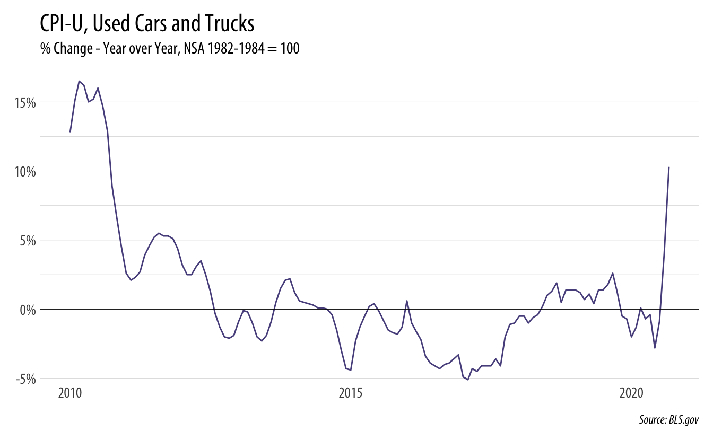

BLS has a new CPI report noting the pretty remarkable price increases in used cars and trucks. This could be part of the reason why new cars are selling so well right now.
Below is a plot of the percentage change in CPI for used cars and trucks for the past decade. The used car market is bonkers right now. September saw a jump of 10.3%.
